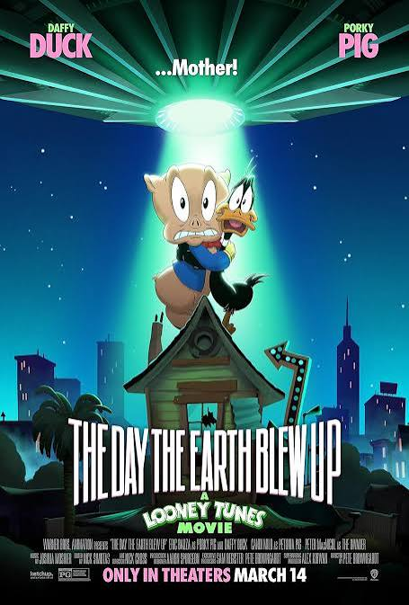

The Day the Earth Blew Up: A Looney Tunes Movie
Year: 2024 • Genre: Family/Comedy/Sci-Fi
The Day the Earth Blew Up: A Looney Tunes Movie proves that the Looney Tunes characters can still carry a feature-length adventure, delivering excellent animation, hilarious gags, memorable characters, and a surprisingly heartfelt story that makes it the best Looney Tunes movie yet.
Review
Date Watched: September 3, 2026
Where Watched: HBO Max
Adaptation? No
Quick Hook (First Impression)
Looney Tunes is one of the most iconic cartoon franchises in television history. From its unforgettable characters and legendary shorts to the iconic voice acting of the man of a thousand voices himself, Mel Blanc, the franchise has been a major part of animation history for generations.
Despite that long history, The Day the Earth Blew Up: A Looney Tunes Movie is surprisingly the first fully animated Looney Tunes feature film to receive a theatrical release. After watching it, I can confidently say that it is also the best Looney Tunes movie yet, surpassing Space Jam, Space Jam: A New Legacy, and Looney Tunes: Back in Action.
Story / Concept
There is a lot to love about this film, but the biggest standout for me was the animation. The animation looks incredibly clean throughout the movie, and certain scenes really pop thanks to the creative use of color.
My favorite sequence was Daffy and Porky working in the gum factory. The scene perfectly captures the visual style and chaotic energy that make Looney Tunes so much fun. I also enjoyed Farmer Jim's appearance throughout the film and the way his character contributes to the story.
I also really enjoyed the story that the film tells. Daffy and Porky live together in a dilapidated house and are told that they need to fix the roof or the house will be condemned, leaving them homeless. After finally finding a job they can do, Daffy discovers a scheme involving an intergalactic invader who is using gum to control the citizens of their town.
On paper, this is a fairly typical sci-fi plot, but adding the Looney Tunes touch makes it both entertaining and hilarious. The movie is filled with great gags, fourth-wall jokes, and the kind of cartoon chaos you would expect from these characters.
At the same time, there is a surprisingly heartfelt subplot involving Daffy and Porky following Farmer Jim's advice that, as long as they stick together, they can accomplish anything. That gives the movie a genuine emotional center underneath all of the comedy.
I also really enjoyed the plot twist involving The Invader. While the film itself can be predictable at times, discovering The Invader's true motives was both hilarious and genuinely unexpected.
Performances
The characters all work extremely well together, but my favorite was easily The Invader, voiced by Peter MacNicol. The Invader is a brand-new character in the Looney Tunes universe, yet MacNicol's performance makes him feel like he belongs in this world.
He brings a hilarious and appropriately strange personality to the character, making The Invader one of the most memorable parts of the movie. I really hope the character is brought back in future Looney Tunes movies or shows.
I also really enjoyed the chemistry between Daffy and Porky. Their personalities naturally clash in funny ways, but their friendship gives the movie its emotional center. Their relationship makes the story feel like more than just a collection of Looney Tunes gags.
Pacing / Flow
At only 1 hour and 31 minutes, the movie moves at a brisk pace without feeling overly rushed. The story gets where it needs to go while still leaving enough room for the comedy, character moments, action, and emotional beats to land.
The film also does a good job of keeping the energy consistent. There is always something happening, whether it is a comedic gag, a fourth-wall joke, a new development in the story, or another ridiculous situation involving Daffy and Porky.
Themes / Meaning
One of the things I appreciated most about the movie was its message about friendship and sticking together. Farmer Jim's advice to Daffy and Porky becomes an important part of their journey and reinforces the idea that having someone by your side can help you overcome even the biggest challenges.
The film also does a great job balancing its heartfelt moments with the absurd humor that Looney Tunes is known for. It never becomes overly sentimental, but there is genuine heart underneath all of the jokes.
Final Thoughts
My biggest nitpick with the film is that I wish it had included more classic Looney Tunes characters. While I appreciate the decision to focus primarily on Daffy, Porky, and Petunia, I would have loved to see a few other iconic characters make appearances.
Characters such as Marvin the Martian or Foghorn Leghorn could have been fun additions to the movie. That said, I understand why the filmmakers chose to keep the story focused on Daffy, Porky, and Petunia, and I don't think their absence takes away from the overall experience.
Despite that minor complaint, The Day the Earth Blew Up is an excellent Looney Tunes movie and, in my opinion, the best one yet. It has a fun story, hilarious jokes, great animation, memorable characters, and enough heart to make it an enjoyable experience for the entire family.
Who is this for? Fans of Looney Tunes, animated comedies, family-friendly movies, and anyone looking for a fun movie that both kids and adults can enjoy.
Who should skip it? Viewers who aren't fans of cartoon comedy or the exaggerated, chaotic style of Looney Tunes may not get as much out of it.
One-Sentence Verdict: The Day the Earth Blew Up: A Looney Tunes Movie is a hilarious, beautifully animated, and surprisingly heartfelt adventure that proves the Looney Tunes characters can still deliver a fantastic feature-length story.
What Worked
- Clean, colorful, and expressive animation.
- The chemistry between Daffy and Porky.
- Peter MacNicol's performance as The Invader.
- The hilarious gags and fourth-wall jokes.
- The heartfelt friendship between Daffy and Porky.
- The unexpected and hilarious plot twist.
- A fun story that works for the whole family.
What Didn't
- I wish more classic Looney Tunes characters had appeared.
- The overall story can be somewhat predictable.
Optional Gut Check
Rewatchable? Yes
Would I recommend this casually to a friend? Yes
I'd love to hear your thoughts. Agree or disagree? Email me at ross@nobodycritics.com